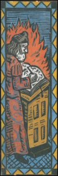

|
Rabbi Simeon began to cry and said: "Woe betide me if I reveal these mysteries and woe betide me if I do not". Zohar (III, 127b) |
Esoteric interpretation
The Kabbalists taught that the finite world is not an emanation of the infinite. On the contrary, their teachings describe that it is the result of a contraction of the infinite, which released the primordial space in which it is located. This abandoned place is teeming with the forces of evil, by-products of the action of the sefirot. It is also the place where the Messiah's soul struggles, tormented by the demons over which it will emerge victorious.

The way to attain knowledge is through the interpretation of the great revelation offered by the Torah, which does not merely have a literal meaning. It also contains an allegorical meaning, but particularly a secret meaning that can be pierced through the interpretation, combination and contemplation of the letters contained inside and their coded values. Contemplating the letters is one of the main forms of Kabbalistic mysticism; it leads to the perception of the Great Name of God and thereby allows universal knowledge. This esoteric interpretation of the Torah leads to the commandments of the Law being given a magic meaning that exceeds their literal meaning. It justifies the importance of the commandments: the moral sense of any human action falls within the realm of the cosmic infinite and has an influence on the balance of the worlds.